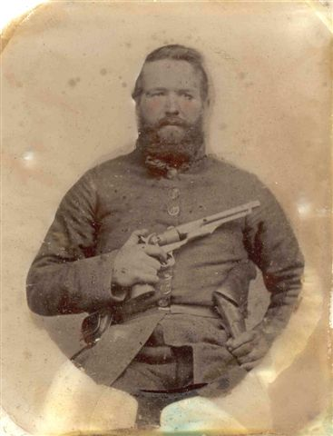

Hughes Jefferson Warden
1831 – by 9 November 1865
Warden line · Raleigh County, West Virginia
Profile status: SUPPORTED
Quick Facts
Born
1831, Virginia SUPPORTED (the 1860 census gives his age as 29; the 1950 family-papers article gives 13 December 1831, and WikiTree, FamilySearch, and Find a Grave give 15 December 1831 — the exact day is unresolved, and the birthplace is given as Montgomery County by the compilations and as Raleigh County or Beckley by the trees; see Research Notes)
Died
Dead by 9 November 1865 DOCUMENTED (his widow Susan remarried that day; no death date, place, or cause is documented — see Research Notes)
Married
Susan Ann Williams, 4 April 1852, Raleigh County, by Rev. Claiborne Curtis
DOCUMENTED (Raleigh County marriage register image, film 3QS7-99K9-33CG, image 358 of 457)
Occupation
Miller and farmer DOCUMENTED (built a saw-mill with a grist-mill attached on the White Stick tract and ground his father’s grain toll-free — court opinion and sworn deposition in Baldenberg v. Warden, 14 W.Va. 397 (1878))
Military
1st Lieutenant, Company B, 16th Virginia Cavalry DOCUMENTED (Confederate Officers Card Index; 2nd Lieutenant from 7 August 1862; 1st Lieutenant from 13 March 1863; present October 1864; shown “Present” on a roster dated January 1865)
Residence
Sand Branch, then White Stick, Raleigh County DOCUMENTED (settled on Sand Branch in 1852 on his father Thomas’s land; moved in 1854 to the White Stick land — Susan’s sworn deposition)
Church
Christian Church (Disciples of Christ) tradition SUPPORTED (Rev. Claiborne Curtis, the first minister of that denomination in the region, married them; the couple’s own membership is not individually documented)
Buried
None found UNPROVED (Find a Grave memorial 16424953 gives “Lost at War”; no stone and no cemetery are known)
Name
Hughes Jefferson Warden, also Hugh, Hughs SUPPORTED (the roster and the marriage record read “Hughes” and “H. J. Warden”; the court opinion and the 1950 family article call him Hugh; the 1860 census spells him “Hughs J Warden”)
Immediate Family
Parents
William Thomas Warden Sr. ×
Sarah Martha Black SUPPORTEDFive sources converge: the 1950 family-papers article (Thomas born 9 October 1801, Pulaski County, wife Martha Black born 10 September 1802, Hughes in their child list); the 1950 county history (“His son Hughes…”); the Warden compilation; Turner’s annotated 1850 census (“Huse 18” in Thomas and Martha’s household); and the 1878 court opinion, which calls Thomas “Hugh’s father” outright. Her full name is Sarah Martha Black, called Martha — the 1820 Wythe County marriage return names the bride “Martha Black” (“Sarah” is not on the return). Thomas died 22 February 1881 or 1882 — the year is unresolved, see Research Notes. Thomas’s own parents are a Gen VI matter and are not settled here.
Spouse
Susan Ann Williams (12 February 1838 – about 1904), married 4 April 1852
DOCUMENTEDHis only wife named in any record of this marriage. After his death she married Max Baldenburg, 9 November 1865 (documented — marriage register), and John J. Jordan, 17 September 1899 (supported — marriage index; FamilySearch does not carry it). Her parents were John Williams Sr. × Susanna Stover — see her page.
Children
Alexander W. Warden (25 March 1853 – 18 July 1904 or 1907)
SUPPORTEDMartha Ann Warden Quesenberry (24 August 1854 – 2 April 1919)
SUPPORTEDLetitia Warden Bailey (9 November 1855 – 24 September 1925)
SUPPORTEDJohn Thomas Warden (12 May 1857 – 24 July 1935)
SUPPORTEDMary Jane Warden Ball (born 25 January 1859; died 1923)
SUPPORTEDCharles Anderson Warden (born 28 October 1860; no death date found)
SUPPORTEDHughes Jefferson “Jeff” Warden Jr. (about September 1862 – 1910)
SUPPORTEDMilton J. Warden (about 1863–1864; no death date found)
SUPPORTEDEight Warden children, in birth order, named in the 1878 court opinion and the DePauk compilation; the first four are on the Raleigh County birth register, each reported by Hughes. Letitia is the direct line — her page is linked above. Milton J. is listed as the eighth child per the court opinion and DePauk, but his paternity is unresolved — he was born about 1863–1864, at the boundary of Hughes’s death and Susan’s remarriage, and the censuses split his surname (Baldenburg in 1870, Warden in 1880); see Research Notes. Martin B. Baldenburg, Susan’s son by her second husband Max, is not a Warden child and is listed on Susan’s page. FamilySearch IDs for the eight: Alexander K8DF-6TH; Martha Ann LCZ1-B4Z; Letitia 2782-C7M; John Thomas 2782-HYP; Mary Jane 9N6Q-SXR; Charles Anderson KNZS-JF6; Hughes Jefferson Jr. LCMH-L8B; Milton J. 9JHR-5FL.
Siblings
Robert Warden (22 November 1820 – 22 March 1893)
SUPPORTEDNancy J. Warden Carper (12 September 1822 – 26 March 1886)
SUPPORTEDJohn Walker Warden (12 October 1825 – 11 April 1900)
SUPPORTEDMary Ann “Annie” Warden Stover (24 September 1827 – 10 August 1910)
SUPPORTEDMartha Jane “Mattie” Warden Greer (21 December 1829 – 12 February 1921)
SUPPORTEDSarah Frances Warden Hurt (27 November 1834 – 17 June 1927)
SUPPORTEDElizabeth Maria Warden Curtis (30 November 1836 – 24 September 1918)
SUPPORTEDDavid Jordan “Jerd” Warden (30 November 1838 – 14 September / 14 October 1904)
SUPPORTEDEmily Warden Williams (20 February 1840 – 31 July 1901)
SUPPORTEDThursey Warden (6 March 1842, died in infancy)
SUPPORTEDMiriam A. Warden (17 August 1846 – 8 March 1933)
SUPPORTEDWilliam T. “Will” Warden (29 May 1848 – 10 June 1921)
SUPPORTEDTwelve siblings of Hughes, children of Thomas Warden × Sarah Martha Black, by shared parent — the 1950 family-papers article and the Warden compilation agree on the roster, and Turner’s annotated 1850 census places the family together in household 056. Three Hurt siblings — Ira, Miriam, and Delilah, all children of John Hurt × Lawsey West — married three Warden siblings: Sarah Frances, John Walker, and David Jordan. Eli Williams married Emily Warden, 11 January 1858, and Hughes married Susan Williams — the double Warden–Williams tie. Miriam A. Warden’s marriage is an open question — see Research Notes.
On Family Tree Sites
Life Timeline
1831 · age 0
Born, Virginia SUPPORTED (the 1860 census gives his age as 29; the exact day — 13 or 15 December — and the birthplace are unresolved, see Research Notes)
about 1832–33 · age 1–2
Came to the Cranberry with his father Thomas’s family SUPPORTED (the 1950 family article says about 1832; the Warden compilation says summer 1832; Riffe says 1833)
4 April 1852 · age 21
Married Susan Ann Williams, Raleigh County, by Rev. Claiborne Curtis DOCUMENTED (Raleigh County marriage register image)
1852 · age 21
Settled on Sand Branch, on his father Thomas’s land DOCUMENTED (Susan’s sworn deposition)
1853–1864
Eight children born: Alexander 1853, Martha Ann 1854, Letitia 1855, John Thomas 1857, Mary Jane 1859, Charles Anderson 1860, Hughes Jefferson Jr. about 1862, Milton J. about 1863–64 SUPPORTED (birth register for the first four; court opinion and DePauk for all eight)
1854 · age 23
Moved to the White Stick land and built a saw-mill with a grist-mill attached DOCUMENTED (Susan’s deposition; the mill “always went by the name of Hugh Warden’s mill”)
1860 · age 29
Census, Raleigh County: Hughs J Warden 29, Susan A Warden 21, Alexander 7, Martha 5, Lutitia 4, John T 2, Mary J 1 SUPPORTED
7 August 1862 · age 31
Commissioned 2nd Lieutenant, Company B, 16th Virginia Cavalry DOCUMENTED (Confederate Officers Card Index)
13 March 1863 · age 32
Promoted to 1st Lieutenant, Company B, 16th Virginia Cavalry DOCUMENTED (Confederate Officers Card Index; the roster dated January 1865 confirms the promotion date)
October 1864 · age 33
Present on the rolls, Company B, 16th Virginia Cavalry DOCUMENTED (Confederate Officers Card Index)
January 1865 · age 34
Shown “Present” on a roster of Company B, 16th Virginia Cavalry DOCUMENTED (roster image, Find a Grave memorial 16424953, photo 12222586)
by 9 November 1865
Dead; his widow Susan remarried that day DOCUMENTED (the bound only — no death date, place, or cause is documented)
Burial
None found UNPROVED (Find a Grave memorial 16424953: “Lost at War”)
Life Story
Hughes Jefferson Warden was born in 1831 in Virginia, the son of William Thomas Warden Sr. and Sarah Martha Black, and came with his father’s family to the Cranberry in what is now Raleigh County, West Virginia, about 1832–33. He married Susan Ann Williams on 4 April 1852 in Raleigh County, by Rev. Claiborne Curtis, the first minister of the Christian Church (Disciples of Christ) in the region. He settled first on Sand Branch on his father’s land, and in 1854 moved to the White Stick tract, where he built a saw-mill with a grist-mill attached — a mill that, as the court later recorded, “always went by the name of Hugh Warden’s mill” — and ground his father’s grain toll-free.
Eight children were born to Hughes and Susan between 1853 and about 1864, and the third, Letitia, carries the line. In the Civil War he served as an officer of Company B, 16th Virginia Cavalry — commissioned 2nd Lieutenant on 7 August 1862 and promoted to 1st Lieutenant on 13 March 1863 — and the rolls show him present in October 1864 and again on a roster dated January 1865. That record is what settles the old stories about his death: he was not killed at Gettysburg on 1 July 1863, as one compiled account says, because the rolls place him in service more than a year after that battle. No death date, place, or cause is documented for him; the only hard fact is that he was dead by 9 November 1865, when Susan remarried.
After his death his widow sued his father Thomas and his brother David J. Warden over the White Stick land, which Thomas had promised him by word of mouth — Baldenberg v. Warden, 14 W.Va. 397 (1878). The circuit court ruled for Susan in 1875, and the West Virginia Supreme Court reversed and remanded, leaving her to elect specific performance “as proved” or rescission. The suit is the clearest record of the family: it names Hugh’s eight children, the mill, the 1852 and 1854 settlements, and Susan’s remarriage. Hughes has no known burial place; his Find a Grave memorial reads “Lost at War.”
Sources and Evidence
- Raleigh County marriage register image (FamilySearch film 3QS7-99K9-33CG, image 358 of 457, read): “Warden, Hughes J. | Williams, Susan | 4/4/1852 | Raliegh [sic] | Claiborne Curtis”. A typed transcription register, not the original certificate; no ages are filled in for this entry. DOCUMENTED
- Confederate Officers Card Index (FamilySearch ark:/61903/1:1:79B6-GNZM, film 3QS7-L9Z5-3VPL, images 1541–1542 of 2,216, read): “WARDEN, HUGHES J / Virginia / 1st Lt., Co. B, 16th Va. Cav. Reg., from March 13, 1863; (2nd Lt., same, Aug. 7, 1862; present to 1st Lt.); / present Oct., 1864”. The back reads “Raleigh Co., (West) Va.” and “from Russell Co., Va.” No enlistment date of 7 April 1862 appears on the card. DOCUMENTED
- Roster image, January 1865 (Find a Grave memorial 16424953, photo 12222586, read directly; a copy is filed in the couple’s Pictures folder): “H. J. Warden, 2 Lt, Co. B, 16 Reg’t Virginia Cavalry. Appears on a Roster of the organization named above. Roster dated Jan, 1865. Date of commission Aug 7, 1862. Date of promotion March 13, 1863. Remarks: Present Promoted to 1 Lt. vice Lt. J. D. Ball resigned.” DOCUMENTED
- National Park Service, Civil War Soldiers & Sailors System (read directly): “Warden, H.J. — Side: Confederacy, Location: Virginia, Battle Unit: 16th Regiment, Virginia Cavalry”, Company B, Rank In Second Lieutenant, Rank Out First Lieutenant, Film M382 Roll 58; alternate name “Hughs J./Wardon”. No Union Hughes or Hugh Warden appears in the NPS index. SUPPORTED
- 1860 census, Raleigh County, Virginia (FamilySearch ark M41Y-KFS, read via WikiTree): “Hughs J Warden 29”, “Susan A Warden 21”, “Alexander 7”, “Martha 5”, “Lutitia 4”, “John T 2”, “Mary J 1”. SUPPORTED
- Baldenberg v. Warden, 14 W.Va. 397 (1878) (full opinion read): Susan, as Hugh’s widow, sued Thomas Warden, David J. Warden, and Hugh’s six minor children in February 1872 over Thomas’s parol promise of the White Stick land; circuit decree 27 April 1875 (Judge Evermont Ward); the West Virginia Supreme Court reversed and remanded, leaving Susan to elect specific performance “as proved” or rescission. The opinion verifies Thomas as Hugh’s father, Hugh’s eight children, the mill, the 1852/1854 settlements, and Susan’s remarriage. DOCUMENTED
- “Thomas Warden Moved Into Raleigh In 1830’s; Eldest Son Stood Six-Week Vigil In Wilderness,” Beckley Post-Herald Centennial Edition, 26 August 1950 (read directly): Thomas born 9 October 1801, Pulaski County; wife Martha Black born 10 September 1802; Hughes in their child list, born 13 December 1831; the family moved to the Cranberry about 1832; Thomas died in February 1881. SUPPORTED
- Riffe, “Early Settlers of Raleigh County” (Beckley Post-Herald Centennial Edition, 1950, read directly): “WARDEN, Thomas — from Pulaski County, Va., moved to Cranberry in 1833. His son Hughes…”; “missing and it was never known what became of him” (of Hughes). SUPPORTED
- Warden, Thomas A., “Some Descendants of Thomas Warden” (read directly in full): Hughes, son of Thomas Warden and Sarah Black, born 15 December 1832, Montgomery County, Virginia; the thirteen siblings; the mill and the White Stick land; the 1882 death year for Thomas. SUPPORTED
- Turner 1982, Families of Raleigh County: The 1850 Census Annotated (read directly): household 056 — Thomas Warden 49, Martha 48, “Huse 18” — and the annotation “[Lt. Col. USA killed at Gettysburg]”, which is contradicted by the Confederate service record and the rolls (see Research Notes). SUPPORTED
- Find a Grave memorial 16424953, Hughes Jefferson Warden (read directly): birth “15 Dec 1831”, Raleigh County; death “unknown”; burial “Lost at War”; parents William Thomas Warden Sr. 1801–1881 and Sarah Martha Black Warden 1802–1884; the main photo is the uniform portrait on this page (photo 4453515, added by Edward P. Stapleton); the bio carries the 16th Virginia Cavalry service note. SUPPORTED
- Geni, FamilySearch, WikiTree, and Find a Grave, read live 9 November 2026: Geni Hughes 6000000008971880290 (birth “December 13, 1831”; death “April 09, 1865, Sussex, VA” — a Geni-only date and place with no supporting source, not adopted here); FamilySearch Hughes 2782-C85; WikiTree Hughes Warden-2574 (born 15 Dec 1831, Beckley; died about 1865, Gettysburg [uncertain] — the header still carries Gettysburg despite its own Research Notes); Find a Grave Hughes 16424953. SUPPORTED
- 1890 Veterans Schedule (FamilySearch collection 1877095, searched): no entry for Hughes Warden and no entry for Susan Baldenburg. The schedule covers Union veterans and widows only; a Confederate soldier and his widow would not be listed. SUPPORTED
- Lewis 1889, History of West Virginia (archive.org, full OCR text searched): the word “Warden” occurs once in the whole book, as an unadorned surname in a name list; no Hughes, no Warden family, no Warden sketch — a negative result for this couple. SUPPORTED
Grades: DOCUMENTED an original record says it · SUPPORTED several records point to it · FAMILY ACCOUNT the family’s own telling · UNPROVED a lead, not proved.
Research Notes and Open Questions
- Grades: DOCUMENTED means an original record read directly says it; SUPPORTED means several records point to it; FAMILY ACCOUNT means the family’s own telling; UNPROVED means a lead, not proved. Every fact on this page carries its grade.
- Birth, three-way conflict (C1): 13 December 1831 (1950 family-papers article) vs 15 December 1832, Montgomery County, Virginia (the Warden compilation; DePauk) vs 15 December 1831, Beckley/Raleigh County (WikiTree Warden-2574; FamilySearch 2782-C85; Find a Grave). The 1860 census age 29 favors 1831 over 1832. “Beckley, Raleigh” is anachronistic as a birthplace — Raleigh County was formed in 1850 and Beckley was not founded until 1838, while the family did not move to the Cranberry until about 1832–33. Position: born 1831 SUPPORTED; the exact day and the birthplace are UNPROVED.
- Death and service (C2): the only hard death fact is the bound — Susan remarried 9 November 1865 as Hughes’s widow. The Gettysburg death, 1 July 1863, is contradicted by the rolls: the Confederate Officers Card Index shows him present in October 1864, and the roster dated January 1865 shows him “Present” — more than a year after Gettysburg. The Turner annotation “[Lt. Col. USA killed at Gettysburg]” is contradicted the same way, and no Union record for him exists in the National Park Service index. The 7 April 1862 enlistment date appears in the Find a Grave bio and the FamilySearch story, but it is NOT on the officers card, which gives only 2nd Lieutenant from 7 August 1862 — the 7 April date is carried here only as a compiled claim, not as a record. The promotion was 13 March 1863, not January 1865 — the card and the roster both say so. The Appomattox death and the “deserted and fled west” stories are unsourced; the 9 April 1865 date is a Geni-only entry with no supporting source and is not adopted.
- Parents (C3/C4): William Thomas Warden Sr. × Sarah Martha Black stand on five converging sources (see the Parents card). An older compiled account carries a different maiden name for Sarah Martha Black — no record anywhere supports it, and it is retired here. Her first name runs Martha (the 1950 article; Turner 1850; the court opinion) against Sarah (the Warden compilation; DePauk); her full name is Sarah Martha Black, called Martha — and the 1820 Wythe County marriage return names the bride “Martha Black” (“Sarah” is not on the return). Thomas was adopted by John Black about 1819 and married John Black’s daughter in Wythe County in 1820 (Warden compilation); the marriage record itself is the return quoted above.
- Thomas’s death year (C5): 22 February 1881 (the 1950 family article; the Find a Grave bio) vs 22 February 1882 (the Warden compilation; the WikiTree parent header). Day and month agree; the year is unresolved. Martha died 10 January 1884 (Warden compilation; WikiTree). Both are buried in the Thomas Warden family cemetery near Skelton (the Warden compilation) / behind the present-day Beckley Mall — the parents’ context, not this couple’s burial.
- Milton J. Warden’s paternity (C11): unresolved. He was born about 1863–1864, at the boundary of Hughes’s death and Susan’s remarriage; he is indexed “Baldenburg” in 1870 and “Warden” in 1880, and after 1880 he was an ore miner in Elizabeth Township, Lawrence County, Ohio, in a mining boarding household — no Warden family with him, and no later record has been found. He is listed here as the eighth child per the court opinion and DePauk, with this flag; he is not assigned to either man.
- The Amos Bailey wife knot (A.6): unresolved — do not state it either way. FamilySearch attaches Hughes’s sister Miriam Warden (2782-H38, born 17 August 1846, died 8 March 1933, parents Thomas Warden and Martha Black on her death record) as Amos Bailey’s wife, married 29 November 1866. The Raleigh marriage transcription, read directly, gives the bride as “Miram A. Wriston,” daughter of Thomas and Martha Wriston. The 1866 marriage image was not re-read at the signed-in pass, and the 1900 census says Amos had been married 5 years (about 1895), which fits neither 1866 marriage cleanly. Miriam Warden is Hughes’s sister; whether she was also Amos’s wife is not settled here.
- Letitia’s death certificate (C13): WikiTree Warden-1155 says Letitia died 24 September 1925 of pneumonia, buried Hurt Cemetery, Stanaford, and cites a death certificate naming her father, mother, and second husband Paris Bailey — but the certificate (#13804) was not read (the West Virginia Vital Research Records search was non-operational at the signed-in pass), so her 24 September 1925 death is carried at UNPROVED, not DOCUMENTED. Lula Bailey Warden (born about 1874/1875, died 24 September 1925) is a separate person — the same death day is a coincidence, and the two women are not conflated here.
- John Williams Sr.’s father (C10): David “Lonesome Dave” Williams × Mary Elizabeth McGriff is UNPROVED — the 1885 funeral account and the trees name him, but Turner met David in person in December 1857 and never called him John Sr.’s father. The chain past David — Jeremiah Williams, William Williams (1720 Wales – 1800) — is tree-only and is not decided here.
- Lore, labelled: Robert Warden’s six-week wilderness vigil at age 14 (1950 published Warden-family tradition, unbacked); John Williams Sr.’s 1885 funeral account (17 children, 398 direct descendants — the account’s own components sum to 370, so the headline number is not used as stated); the double Warden–Williams tie (Eli Williams × Emily Warden, 11 January 1858; Hughes × Susan, 4 April 1852); the triple Warden–Hurt marriages (Ira Hurt × Sarah Frances Warden, John W. Warden × Miriam Hurt, David J. Warden × Delilah Hurt — all three Hurt siblings children of John Hurt × Lawsey West).
- Twins (C25): three twin pairs exist in the wider Williams circle — Ellen and an unnamed twin Smith, born 15 February 1866 (Nancy Williams Smith’s children); Isaac “Ike” and Warden Harvey Williams, born 18 February 1869 (Burwell Williams’s sons); George Walton and Willie Jenmyre Warden, born 27 October 1875 (Melissa Jane Williams Warden’s children). None in Hughes × Susan’s own eight children.
- Still open: Dickinson’s 16th Virginia Cavalry regimental history (unread — the library route is not executable in a browser); the twelve unopened index entries for Hugh J. Warden in the Confederate Officers Card Index (only the principal card was read); Susan’s Virginia Confederate pension (not searched); the West Virginia Vital Research Records images (the 1865 Baldenburg marriage, the 1899 Jordan marriage, the 1872 Bailey–Warden marriage, the 1866 David Warden × Jane Williams marriage, the 1866 Amos Bailey marriage, the 1874 Mary Jane Warden × James William Ball marriage, and Letitia’s 1925 death certificate — all unread, not absent); Find a Grave memorials 119998116 (Letitia), 23638308 (Thomas), and 23651488 (John Sr.) — unread, blocked at the signed-in pass; Ancestry — Tricia’s tree was blocked site-wide (“automated traffic is prohibited”), so no Ancestry ID is carried here and the tree is unread, not absent; the John J. Jordan pension card (Company A, 194th New York Infantry, widow Bernice D. Jordan) — identity with Susan’s husband is not established; Max Baldenburg’s death and immigration — no record found.
- Tree checks, signed in 9 November 2026: Geni — Hughes 6000000008971880290, Susan 6000000008971826430, John Sr. 6000000007425825094, Thomas 6000000154045296837; FamilySearch — Hughes 2782-C85, Susan 2782-C1W, Thomas LZPJ-72N, Sarah K2DR-NNX, John Sr. LCZ6-Q82, Susan Stover LCZ6-Q68, Letitia 2782-C7M; WikiTree — Hughes Warden-2574, Susan Williams-141341, Letitia Warden-1155, John Sr. Williams-34097; Find a Grave — Hughes 16424953 (read directly at build time: the portrait and the January 1865 roster image).